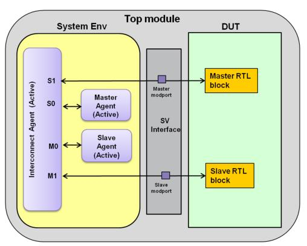

In this scenario, DUT is a system with multiple AXI masters and slaves. VIP is required to provide the background traffic on some ports, and to route the transactions between master and slave ports.
Assuming that the AXI System DUT has two master ports and two slave ports. VIP is required to provide the background traffic to ports S0 and M0. All the ports need to be monitored. Configure the AXI System Env to have one master agent and, slave agent and Interconnect Env. Configure the master agent, slave agent and Interconnect Env as active. The ports of Interconnect Env would continue to perform passive functions such as protocol checking and coverage. The passive functionality in master and slave agents connected to the Interconnect Env ports may be optionally disabled.
Figure 9‑8 System DUT with Active Interconnect VIP

Implementation of this topology requires the setting of the following properties:
Assuming instance name of system configuration is "sys_cfg".